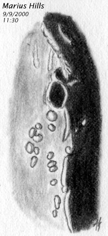
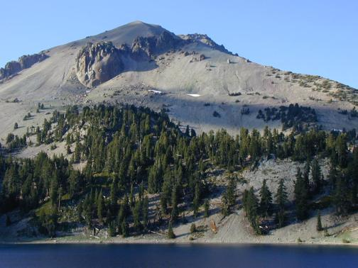

Last month we looked at some sinuous rilles here and on the moon, but it may not be so easy to connect to that if you haven't been "tubing' before (hiking through lava tubes).
Domes, on the other hand, are something most of you are intimately familiar with, whether you know it or not: Lassen Peak is a dome. Even better, it's only one dome in a whole field that includes every nearby peak.
|  |
If you've been there, you'll have some idea what these structures look like on the moon. But then again, maybe not.
As you approach the park, you'll note you've been climbing for some time.
Most of what you were climbing for many miles was the lower skirt of the Lassen structure.
Point one: some domes are big. On the moon, the Rumker complex is huge and dimpled even more than Lassen would be if viewed from the Moon. But overall, they are similar structures. And they're both so large that their size is not obvious to the casual observer.
Other domes come in tight - but separate - groupings. The Marius Hills are a good example of this.
Some are singular and have a simple central depression (cone); several of these can be seen around Copernicus.
But what causes them? The same process, both here and on the moon. Domes usually have a vent (the crater on the top of Lassen Peak, for example).
However, the vent is not adequate to relieve all the pressure of the magma pushing up from below. The result is a general rise of the entire area, just like a swelling under your skin.
It should be no surprise that domes often have a hemispherical shape.
On top of that general rise will be either a single eruptive series (a simple dome would be the result) or a repeated series of eruptions in different locations, all sourced from the same general weakness in the crust.
Large structures like Rumker or the Lassen area are examples of the latter.
On Earth, of course, erosion tends to wear down domes, so they're not as clean or plentiful as on the Moon. But those of us in northern California are lucky to have the youthful Lassen dome to inspect.
|  |
What can you learn about the Moon from going to Lassen?
In some ways, not much. There aren't trees on the moon, but there are quite a few on Lassen.
And the spectacular Bumpass Hell, where water and hot gasses (including some sniffy sulfur compounds) are still leaking out, has no known parallel on the moon. Some outgassing is suspected, but something as thermally obvious as Bumpass Hell would probably show up on one instrument or another...
But the general shape and look can be very handy in understanding lunar domes, and in particular taking a hike to the top of Lassen can really give you and appreciation for what you're seeing up there.
The hike can be done by anyone in reasonable shape - the fact that I made it is a sure testament. I'm not a great high-altitude person, and the peak is almost 10,500 feet above sea level. The hike start at over 8,000 feet, which is pretty near my normal limit.
I was pretty out of it all the way up, occasionally stumbling from the altitude weirdness. But it wasn't too tough, and definitely worth it.
Even though it was September, there was still a snow/ice field at the top, which will not be present on the moon.
What is present is a central depression - which you will see on many lunar domes. Studying it, you can see how it might show up better in some light than others, and how shallow it is (so light angle is critical).
Also from way up there, you can look around at the other, older remnant domes from other vents, and get a feel for how a lunar dome field would look if you could get that close (most of us probably won't).
Overall, Lassen is not to be missed in its own right. But for lunaphiles, it's also a unique local laboratory.
But maybe even more, it gives a real seat-of-the-pants "feel" for what you're seeing when you inspect lunar domes - a connection that can really make your ideas and eyepiece click all at once.
It's surprising how much of the moon you can see right here on Earth.